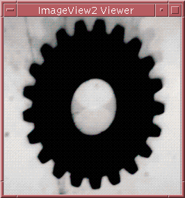
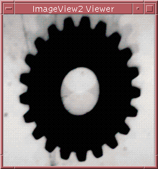

|  |  |
| Before operation | After operation |
If the weights are:
Wa, Wb, Wc, Wd, We, Wf, Wg, Wh, Wi
rr(i, j) = SUM(Wa x ra(i - 1, j - 1) + Wb x ra(i, j - 1) + ... Wi x ra(i + 1, j + 1)) / SUM(Wa + Wb + ... + Wi)
gr(i, j) = SUM(Wa x ga(i - 1, j - 1) + Wb x ga(i, j - 1) + ... Wi x ga(i + 1, j + 1)) / SUM(Wa + Wb + ... + Wi)
br(i, j) = SUM(Wa x ba(i - 1, j - 1) + Wb x ba(i, j - 1) + ... Wi x ba(i + 1, j + 1)) / SUM(Wa + Wb + ... + Wi)
|  | |
| Before operation | After operation |